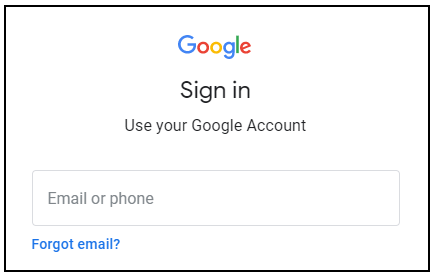

לוחצים על הלחצן Start Lab (התחלת השיעור המעשי). אם זה שיעור בתשלום, יקפוץ חלון שבו בוחרים אמצעי תשלום. מימין יש חלונית עם פרטי כניסה זמניים שמולאו מראש. צריך להשתמש בפרטים האלו בשיעור המעשי הזה.

מעתיקים את שם המשתמש ואז לוחצים על Open Google Console (פתיחת Google Console). יופעלו משאבים במעבדה, ואז ייפתח הדף Sign in (כניסה) בכרטיסייה נפרדת.

טיפ: כדאי לפתוח את הכרטיסיות בחלונות נפרדים, אחד לצד השני.
בדף Sign in (כניסה), מדביקים את שם המשתמש שהעתקתם מהחלונית Connection Details (פרטי התחברות). אחר כך מעתיקים ומדביקים את הסיסמה.
חשוב: צריך להשתמש בפרטי הכניסה מהחלונית Connection Details. אין להשתמש בפרטי הכניסה של Qwiklabs. אם יש לכם חשבון Google Cloud משלכם, אל תשתמשו בו בשיעור המעשי הזה (כך תימנעו מחיוב בתשלום).
לוחצים כדי לעבור את הדפים הבאים:
- הסכמה לתנאים ולהגבלות.
- אין להוסיף אפשרויות שחזור או אימות דו-שלבי (כי החשבון הזה זמני).
- אין להירשם לתקופות ניסיון בחינם.